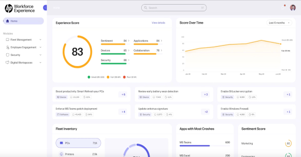
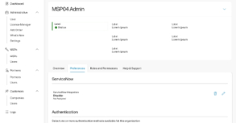

Prasant Poodipeddi
WORK
ABOUT
CONTACT
RESUME
Home
> Work at HP
My Work at HP

Application Errors
This feature of the Workforce Experience web app has been one of the most educational experiences for me at HP, largely due to the challenges it presented. It was one of the fastest-paced, high priority projects I’ve worked on, leaving little time for formal user research.
Read More >>

Campaign and Allowlist Creation
The primary focus of this feature is to enable IT administrators to measure employee satisfaction of their devices, enhancing their overall productivity. This includes sending out action-based campaigns containing survey URLs to employees' devices.
Read More >>
Copyright 2024. Prasant Poodipeddi